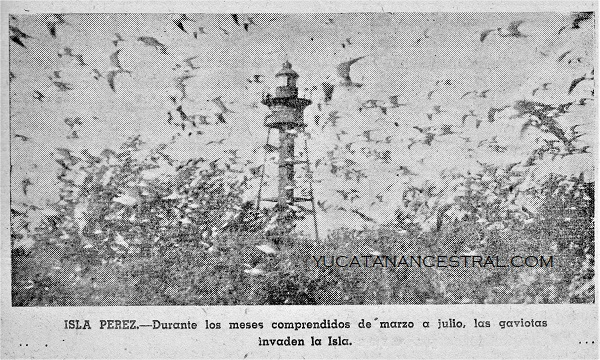
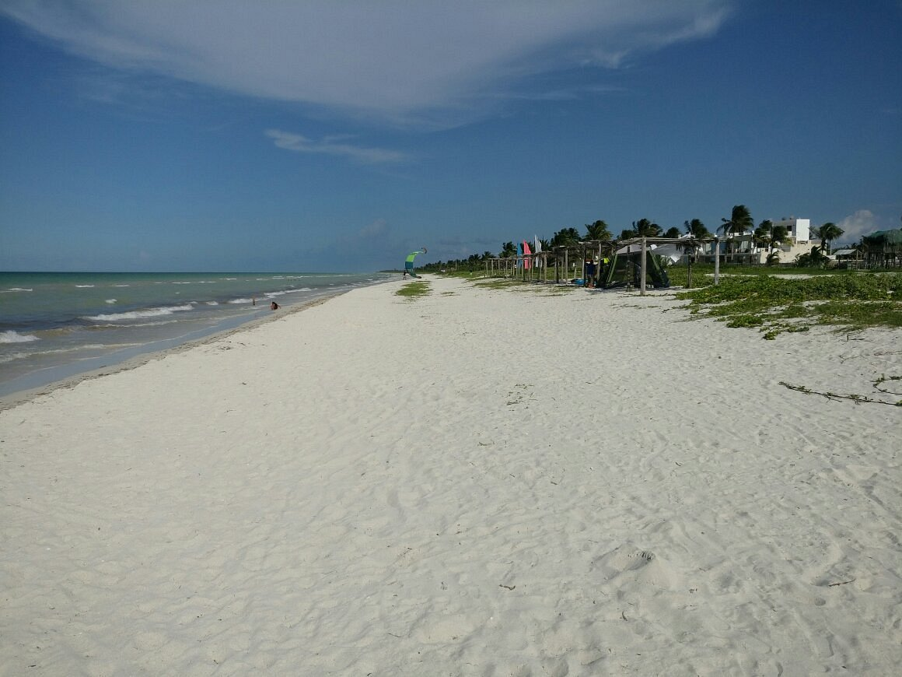

El Cuyo, un pintoresco pueblo ubicado en la costa de Yucatán, tiene una historia que se remonta a siglos atrás. Fundado por comunidades mayas, el área ha sido un punto estratégico de comercio y cultura desde la antigüedad. Los primeros pobladores se asentaron en esta región debido a su rica biodiversidad y sus abundantes recursos marinos.

Foto histórica del pueblo de El Cuyo.
La Era Colonial
Durante la época colonial, El Cuyo se convirtió en un importante puerto para la exportación de productos agrícolas y pesqueros. La influencia de los colonizadores españoles dejó una huella significativa en la arquitectura y las costumbres del lugar. A pesar de las dificultades, la comunidad local preservó su identidad cultural y sus tradiciones.
El primer pescador saliendo con el amanecer.
El Desarrollo Moderno
En el siglo XX, El Cuyo experimentó un crecimiento gradual como destino turístico. El desarrollo de infraestructuras y la promoción de su belleza natural atrajeron a visitantes de todo el mundo. Hoy en día, El Cuyo es conocido por sus playas vírgenes, su rica vida marina y su ambiente tranquilo, convirtiéndose en un destino popular para aquellos que buscan escapar del bullicio de las grandes ciudades.

Playas modernas de El Cuyo.
El Cuyo en la Actualidad
Hoy en día, El Cuyo sigue siendo un tesoro escondido en la costa de Yucatán. Con su encanto rústico y su ambiente relajado, el pueblo atrae a viajeros en busca de autenticidad y tranquilidad. La preservación de su entorno natural y su cultura local son prioridades para la comunidad, que trabaja en conjunto para proteger y promover este paraíso costero.